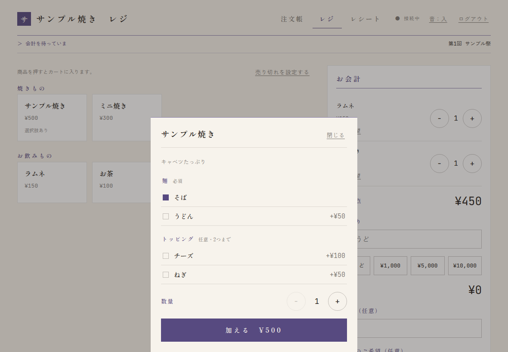
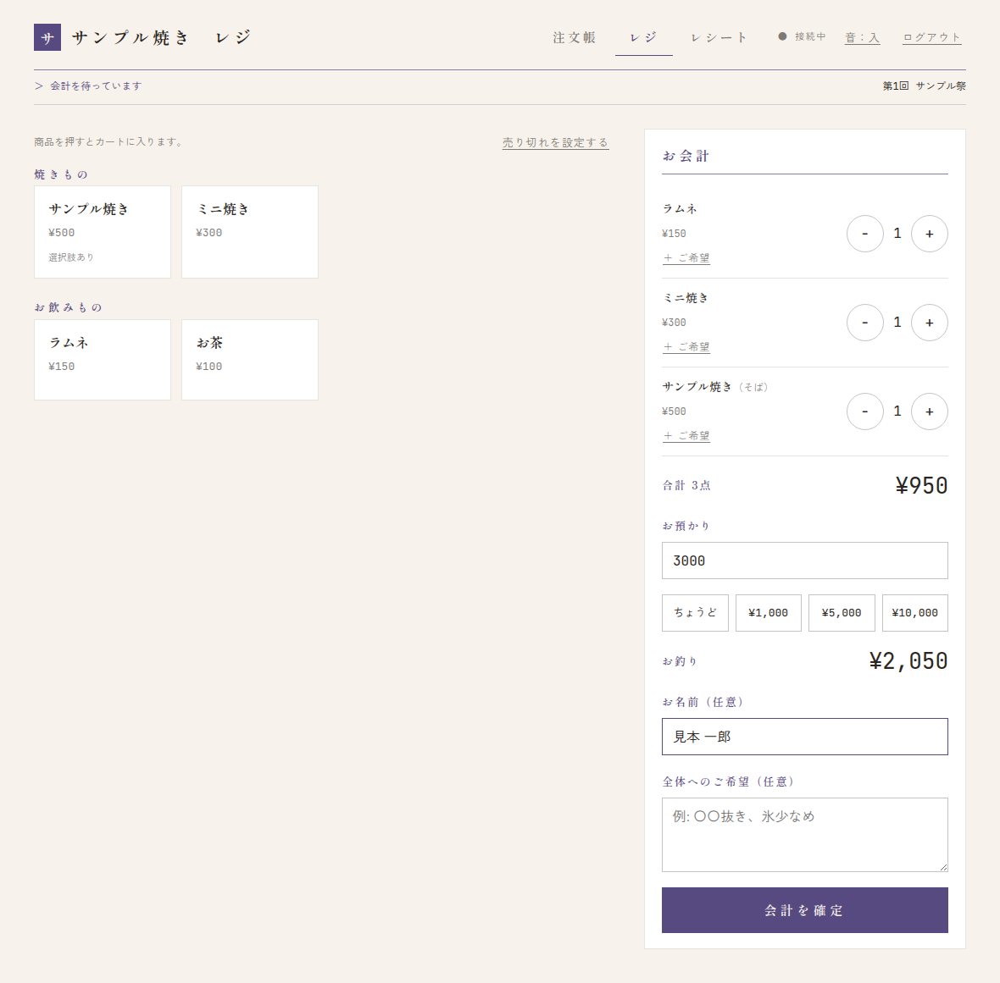
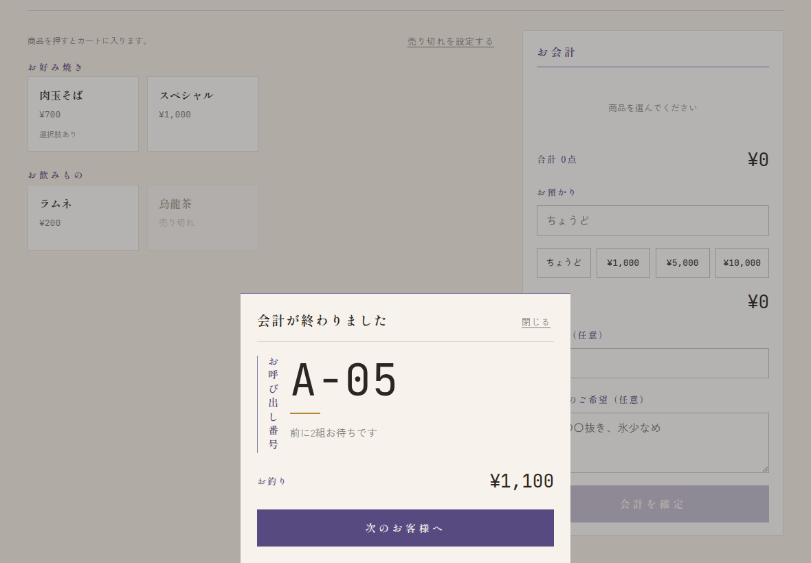
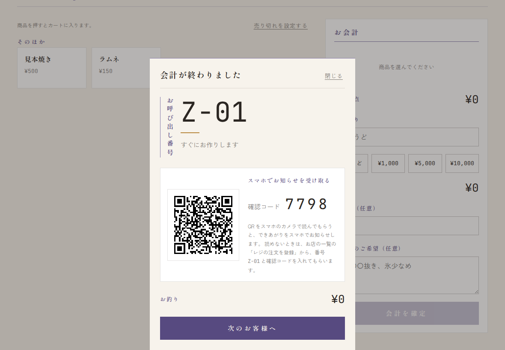
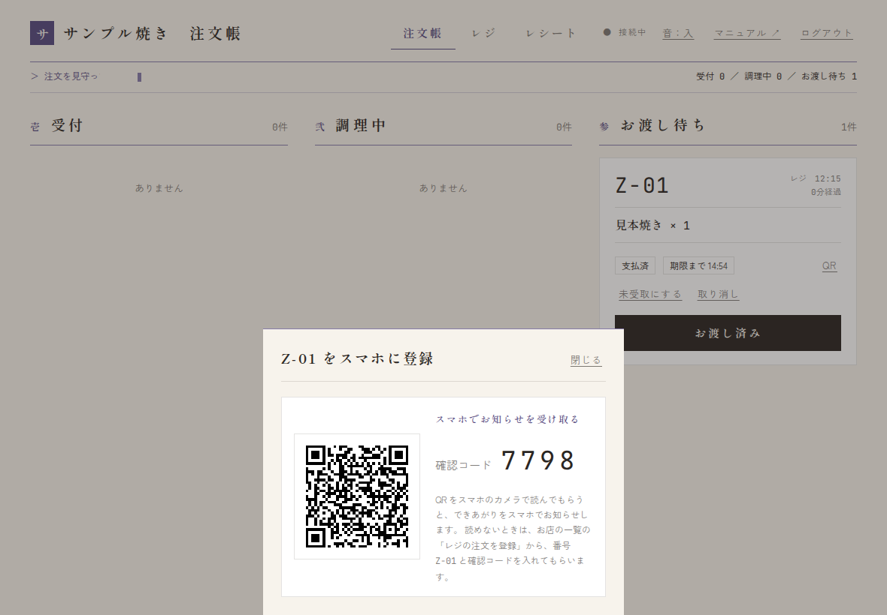
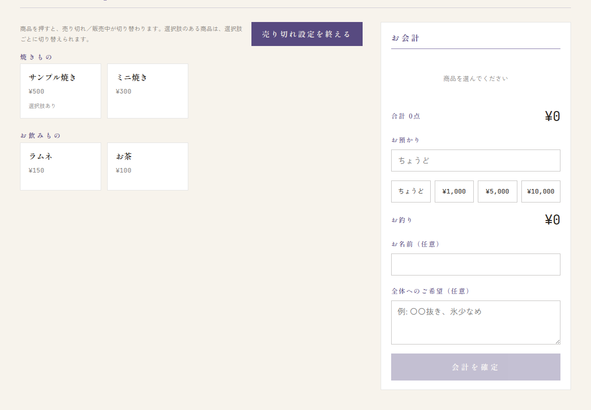
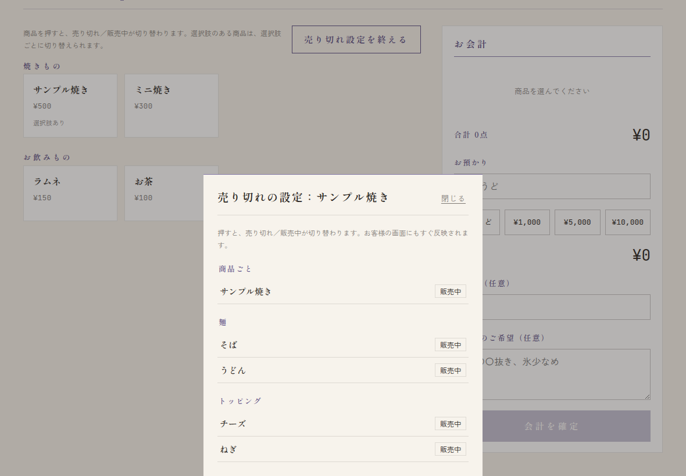
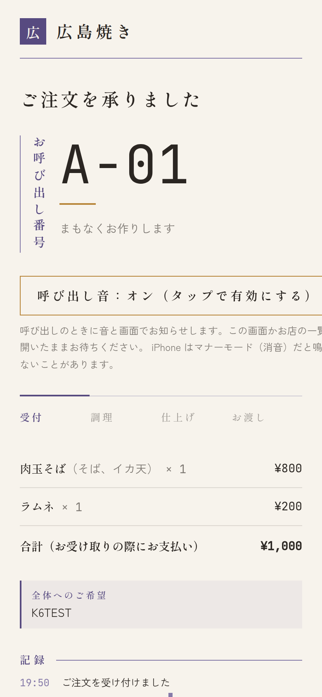
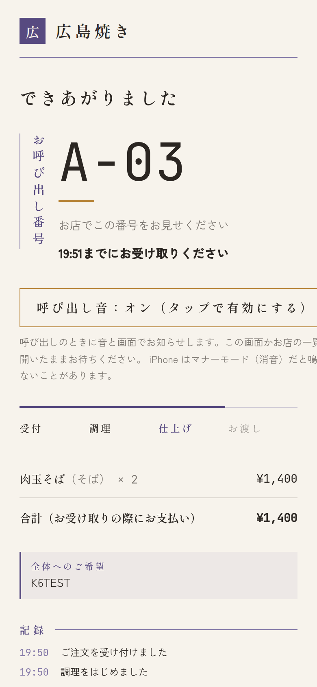

レジ（お店の前での注文）
右上の レジ を押します。
- 商品を押すと、右（スマホでは下）の「お会計」に入ります。選択肢のある商品は、選ぶ画面が出ます。
- 数は − + で変えます。品ごとのご希望は ＋ ご希望 から。
- お預かりに受け取った金額を入れます（ちょうど ¥1,000 などのボタンも使えます）。お釣りが出ます。
- 会計を確定 を押します。
- 「会計が終わりました」に出る整理番号をお客さんに伝えて、次のお客様へ を押します。






レジの注文も注文帳に入ります（支払い済み）。あとは Web 注文と同じように進めます。
お客さんのスマホに登録してもらう（QR と確認コード）
レジで注文したお客さんも、自分のスマホで「できあがり」の呼び出しを受け取れます。会計が終わった画面に、QR と4桁の確認コードが出ます。
- 整理番号を伝えるときに、「スマホでできあがりをお知らせできます」と QR を見せます。
- お客さんがスマホのカメラで QR を読むと、その注文の画面が開き、スマホに登録されます。
- QR を読めないときは、お客さんの画面の「お店の一覧」→ レジの注文を登録 から、お店・番号・確認コードを入れてもらいます。確認コードを口頭で伝えてください。
- 次のお客様へ を押したあとでも、注文帳のカードの QR から、同じ QR と確認コードをもう一度出せます。
引換票（紙）を渡す
店長が印刷した引換票を使うときは、会計が終わった画面を見ながら、空欄に書き込んで渡します（→ 引換票の印刷）。
- 注文番号: 印刷された英字（例: A）のあとに、数字を書きます（例: A-12）。
- 確認コード: 画面の4桁の数字を書きます。
- 「できあがりは番号でお呼びします。受け取りのときにこの紙を見せてください」と伝えて渡します。紙の QR を読むと、お客さんのスマホで注文の画面（お店の一覧）が開きます。




確認コードは番号と一緒に伝えるものです
番号だけでは登録できません（ほかの人の注文を登録されないように）。確認コードは、その注文のお客さんにだけ伝えてください。
確認コードを5回続けて間違えると、その注文は15分ほど登録できなくなります。お渡し済み・取り消しの注文は登録できません。
お客さんは、注文の画面の「できあがりをメールで受け取る」から、あとでメールアドレスを登録することもできます（店長の店舗設定でメールを使っているときだけ）。
売り切れの設定
- レジの画面で 売り切れを設定する を押します。
- 商品を押すと、押したとたんに売り切れ／販売中が切り替わります。
- 選択肢のある商品を押すと、選択肢ごと（例: トッピングの1つだけ）に切り替える画面が出ます。
- 終わったら 売り切れ設定を終える を押します。




切り替えは、すぐお客さんの画面にも反映されます。売り切れにした時刻と戻した時刻は記録され、店長が売上の画面で見られます。
お客さんの画面（聞かれたときのために）
お客さんはスマホで、お店の一覧 → お品書き → 注文の確認 → 注文状況、と進みます。




- 呼ばれると、音と画面いっぱいの表示で知らせます（画面を開いたまま待ってもらいます）。
- iPhone はマナーモードだと音が鳴らないことがあります。
- 調理が始まる前なら、この画面から注文を取り消せます。
- 画面を閉じてしまった人は、お店の一覧の「受付中の番号」から戻れます（同じスマホ・同じブラウザのとき）。レジの注文なら、QR か確認コードでもう一度登録できます。
お客さん向けの使い方は 注文のしかた にまとめています（お客さんの画面の 注文のしかた ↗ から開けます）。